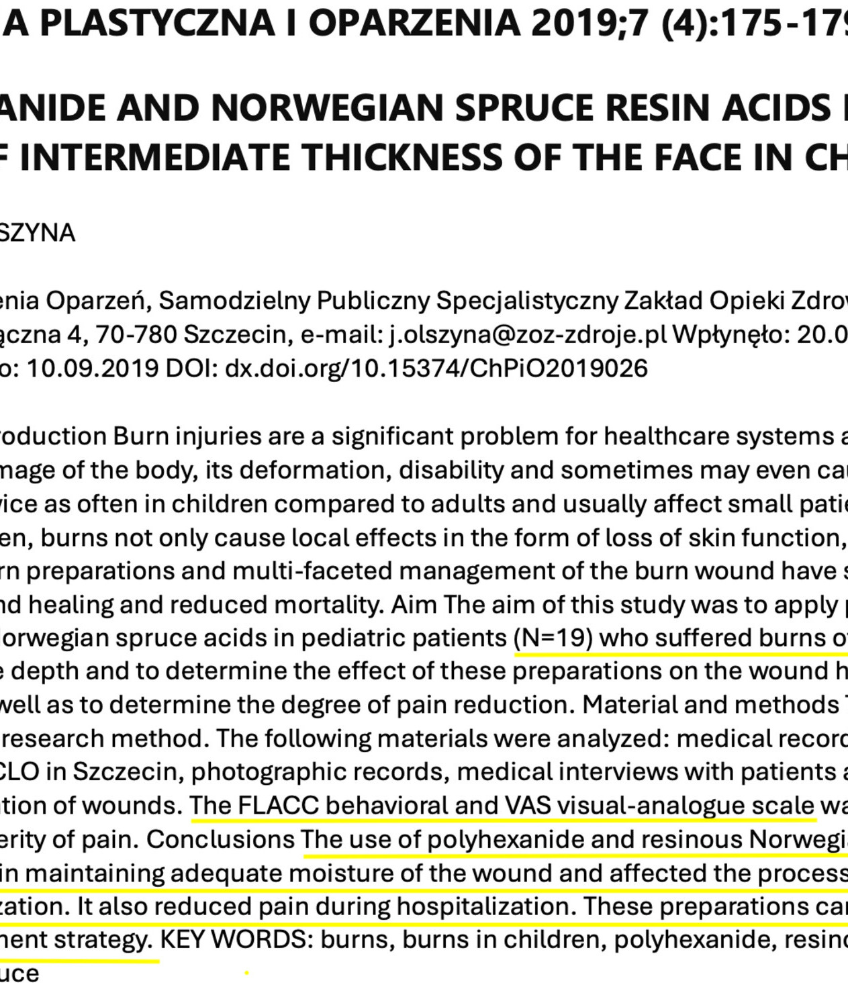

Clinical Study
A clinical evaluation used a case study research method to investigate the application of polyhexanide (PHMB) and resin salve in 19 pediatric patients (aged 5 months to 6 years) suffering from intermediate-thickness facial burns caused by hot liquids. PHMB gel and liquid were used for moisturizing and cleansing, while the spruce resin preparation was applied 2–3 times daily. The study assessed wound healing progress and pain intensity using the FLACC behavioural scale and the VAS visual-analogue scale on days 1, 2, 4, 6, 10, and at discharge. The average duration of hospitalization was 11.2 days.
Key Findings
Significant pain relief was achieved quickly, with a major reduction in intensity observed by the fourth day of treatment (mean FLACC/VAS score of 2.3). By the sixth day, 73% of the children (11 of 15 assessed at that time point) reached a zero score on both pain scales. The use of resin salve maintained optimal wound moisture, which facilitated the correct course of keratinocyte proliferation, granulation, and re-epithelialization. The researchers concluded that this treatment protocol effectively aligns with the TIME strategy for wound management.

Download
Download PDFReference
Olszyna J. Zastosowanie poliheksanidu i żywiczych kwasów świerku norweskiego w oparzeniach pośredniej grubości skóry twarzy u dzieci. Chirurgia Plastyczna i Oparzenia / Plastic Surgery & Burns. 2019 Dec;7(4):175–9. doi:10.15374/CHPIO2019026
Back to study